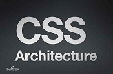

CSS是一种定义样式结构如字体、颜色、位置等的语言，被用于描述网页上的信息格式化和现实的方式。CSS样式可以直接存储于HTML网页或者单独的样式单文件。无论哪一种方式，样式单包含将样式应用到指定类型的元素的规则。外部使用时，样式单规则被放置在一个带有文件扩展名_css的外部样式单文档中。
样式规则是可应用于网页中元素，如文本段落或链接的格式化指令。样式规则由一个或多个样式属性及其值组成。内部样式单直接放在网页中，外部样式单保存在独立的文档中，网页通过一个特殊标签链接外部样式单。
名称CSS中的“层叠（cascading）”表示样式单规则应用于HTML文档元素的方式。具体地说，CSS样式单中的样式形成一个层次结构，更具体的样式覆盖通用样式。样式规则的优先级由CSS根据这个层次结构决定，从而实现级联效果。
2019-9-5